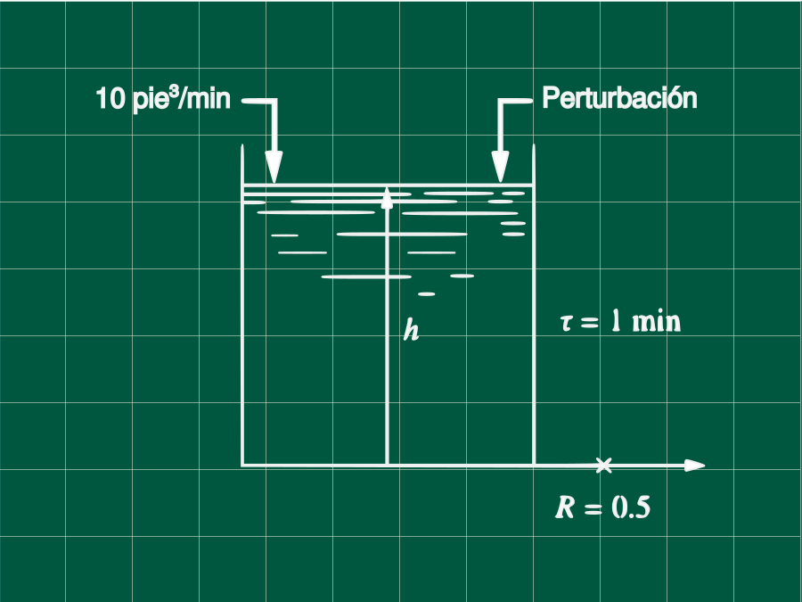
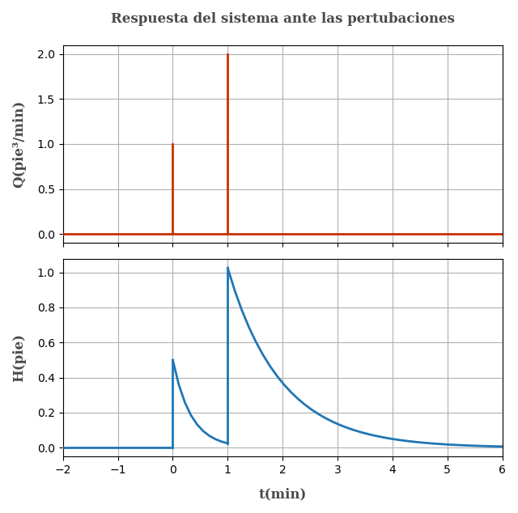

Problema P5.9 (Process Control - Coughanowr)

El nivel del líquido del proceso mostrado en la figura opera en estado estacionario, entonces una perturbación ocurre. A t = 0,la cantidad de 1 pie³ de agua es añadida al tanque de manera repentina (impulso unitario); a t = 1min, son añadidos 2 pie³ de agua de manera repentina también. Dibuje al respuesta del nivel en el tanque (h) vs el tiempo (t), y determine el nivel en los tiempos t = 0.5, 1.0 y 1.5 minutos.
Datosτ=1 minR=0.5qs=10 pie³/min
Obtención de la ecuación en transferencia
Sea q el caudal, h el nivel del líquido
Escribiendo las ecuaciones de balance volumétrico
q−q0=dtdV
Pero q0=h/R y dV=Adh
q−Rh=Adtdh (1)
Escribiendo el balance en estado estacionario
qs−Rhs=0 (2)
Restando (1) con (2) para obtener las variables desviación y recordando que dh=d(h−hs), por ser hs constante.
q−qs−Rh−hs=Adtd(h−hs)
Q−RH=AdtdH
Aplicando la tranformada de Laplacey sabiendo que H(t=0)=h−hs=hs−hs=0
Q(s)−RH(s)=A[sH(s)−H(t=0)]Q(s)−RH(s)=AsH(s)
Despejando y sabiendo que τ=AR
Q(s)H(s)=ARs+1R
Q(s)H(s)=τs+1R
Reemplazando los valores τ=1 y R=0.5
Q(s)H(s)=s+10.5 (3)
Descripción de la perturbación
La perturbación sólo va a afectar el caudal de ingreso, esta puede ser representado por la variable desviación Q(t). Para diferenciar el impulso unitario se pondrá el simbolo de ∞ al lado del valor de la perturbación.
Q(t)=⎩⎪⎪⎪⎪⎨⎪⎪⎪⎪⎧01 pie³/min (∞)0 2 pie³/min (∞)si t<0si t=0si t>0si t=1min
Expresando la misma función con impulsos unitarios y aplicando la transformada de Laplace
Q(t)=1⋅δ(t)+2⋅δ(t−1) //L{ }Q(s)=1+2⋅e−s⋅L{δ(t)}Q(s)=1+2⋅e−s
Reemplazando la expresión anterior en la ecuación (3)
H(s)=Q(s)⋅s+10.5H(s)=(1+2e−s)s+10.5
Despejando y aplicando la antitransformada L−1{ }
Recuerde que la expresión e−as crea un desfase de tiempo en la antitranformada igual a t−a, también L−1{s+k1}=e−kt
H(s)=s+10.5+s+1e−s
H(t)=0.5⋅e−t⋅u(t)+e−t⋅u(t)∣t=t−1H(t)=0.5⋅e−t⋅u(t)+e−(t−1)⋅u(t−1)
Notese que normalmente se omite el término u(t) en la antitransformada, pero en este caso es necesario ponerlo para aclarar los dominios
Escribiendo nuestra ecuación de manera más entendible
H(t)={0.5⋅e−t0.5⋅e−t+e−(t−1)si 0<t<1si t>1 (4)
Con las funciones ya determinadas podemos graficarlas.

Del enunciado nos piden calcular las el valor de h(t=0.5), h(t=1) y h(t=1.5)
Recuerde que H=h−hs por que lo que h=H+hs
Determinado hs de la ecuación del estado estacionario
qs−Rhs=0hs=qs⋅R=10⋅0.5=5pie
Usando la ecuación (4) para hallar lo solicitado
h(t=0.5)=H(t=0.5)+5h(t=0.5)=0.5⋅e−0.5+5=5.3033 pie
Para cuando t = 1 min nuestra función matemática no esta definida (los puntos en la gŕafica son punteagudos y hay una pendiente infinita) pero si la tenemos definida antes y despues de la perturbación, teniendo eso en cuenta y sabiendo que nuestro modelo es una aproximación del fenómeno, indicamos que la altura inmediatamente antes de la perturbación a t = 1 min es:
h(t=1)=0.5⋅e−1+5
h(t=1)=5.1839 pie
E inmediatamente después de la perturbación a 1 minuto
h(t=1)=0.5⋅e−(1−1)+e−1+5
h(t=1)=6.1839 pie
A t = 1.5 min
h(t=1.5)=0.5⋅e−1.5+e−(1.5−1)+5
h(t=1.5)=5.7181 pie
Para completar el ejercicio, grafiquemos el nivel del líquido en el tiempo (h vs t)
La grafíca es similar a la gráfica de H(t) vs t, con la diferencia de que esta desplazado en el eje de las ordenadas.

Referencias
- Coughanowr, D. R.; LeBlanc, S. E. (2009). Process Systems Analysis and Control (3rd edition). McGraw-Hill. ISBN 978-0-07-339789-4.